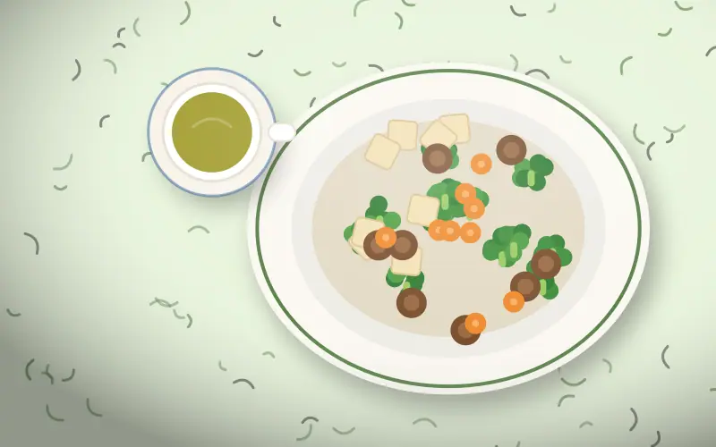

素 · Vegetarian29%OFF
Causeway Bay · Wan Chai
Kung Tak Lam
功德林
Vegetarian Shanghainese lunch set上海素菜午市套餐
$98$138Save HK$40
63/100
HK Cheap Eats Value Score · Average valueEstimated from the editors’ rating, price vs similar vegetarian places and MTR access. Portion size and customer reviews aren’t scored yet. How it’s calculated
- Hours
- 11:00 – 23:00
- Best for
- Lunch
- Nearest MTR
- Causeway Bay 銅鑼灣 · 1 min walk
- Pay with
- Octopus · Card · FPS / PayMe
- Cuisine
- Vegetarian 素食 · veggie options
- Area
- Causeway Bay 銅鑼灣 · Wan Chai 灣仔區
- Status
- Unverified
- Source
- HK Cheap Eats editors
- Listed
- 14 Nov 2026
- Price last checked in store
- Not yet
Picture is an illustration, not a photo of this restaurant. Spotted a wrong price or hours? Suggest a correction in the app.